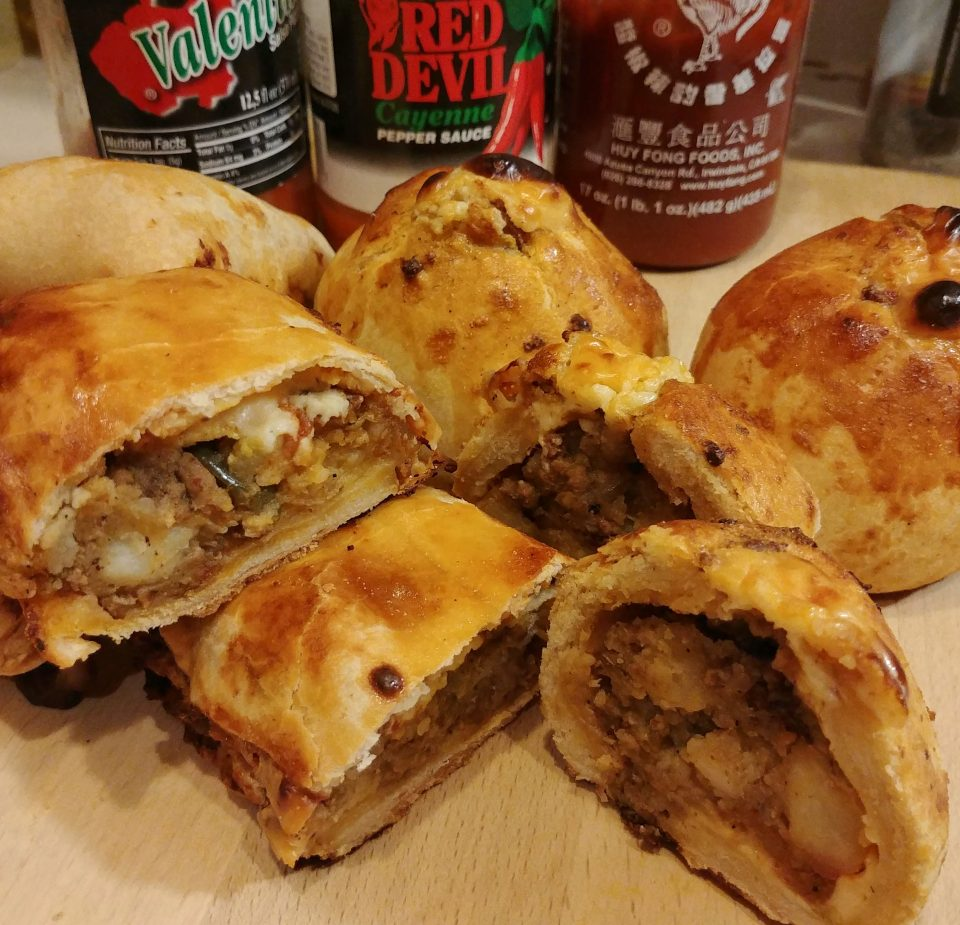

Rapp Snitch Knishes

Description of Dish
Rapp Snitch Knishes are a chopped cheese inspired knish with a mexican spice to them.
They are inspired by the song Rapp Snitch Knishes by MF DOOM from the album MM..FOOD.
Ingedients
Dough
- 2 3/4 cups all purpose flour
- 1 teaspoon kosher salt
- 1 teaspoon baking powder
- 1 beaten egg
- 1 teaspoon of white vinegar
- 1/2 cup canola oil
- 1/2 cup warm water
- 2 eggs and 1 tablespoon water for egg wash
Filling
- 2 pounds peeled russett potatoes quartered
- 1 pound ground beef
- 1/2 a yellow onion diced
- 1/4 cup jalepenos minced
- 2 tablespoons taco spice
- 12 slices chopped American cheese
- Ketchup and Mustard
Steps
Dough
- Whisk flour, salt, and baking powder in a bowl.
- Make a well in the center and add egg, vinegar, oil, and warm water.
- Turn the dough out onto the counter and knead until soft, smooth, and elastic.
- Wrap in plastic wrap and refrigerate for at least 1 hour.
Filling
- Boil the potatoes until they can be pierced with a fork.
- Drain potatoes and mash with a potato masher or a fork.
- Heat a large cast-iron skillet over medium-high heat and add onions, jalapenos, ground beef, and 1 tbsp taco spice.
- Cook without disturbing until beef develops a crust(2 to 3 minutes).
- Flip with a spatula and break up the meat.
- Continue cooking until fully browned, about 2 minutes.
- Combine the ground beef mix with the potatoes and stir together. Allow to cool completely in the fridge.
Assembly
- Pre-heat the oven to 375 degrees and line 2 baking sheets with parchment paper.
- Take the dough out and allow it to come to room temperature.
- Divide the dough in half and flatten one half into a rectangle on a floured surface.
- Roll out into a larger rectangle(1/8 inch thick), pulling the corners as needed.
- Place about 2 cups of filling along one long end, about three inches away from the edges and drizzle with ketchup and mustard.
- Top the filling with 6 slices of American cheese.
- Beat egg with water and brush over the opposite end and sides.
- From the filling side, roll up toward the egg washed side.
- Press the filling in and roll over so the seam is on the bottom.
- Trim excess dough off the ends and mark the dough in 8 equal pieces.
- Flour the side of your hand and press into the marks, rubbing back and forth across the counter to separate the pieces.
- Position each piece with one cut end facing down and the other facing up.
- Squish down the top and tuck everything into the center to form a round knish.
- Repeat above with the remaining dough and filling. Brush the bottoms with olive oil and the tops with egg wash and place them on the baking sheet.
- Bake for 15 minutes, rotate the trays and cook for another 15 minutes(or until golden brown).
- Allow to cool until room temperature.
Back to Home